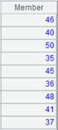
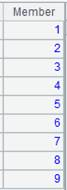
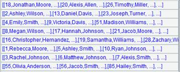
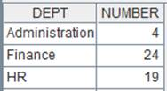
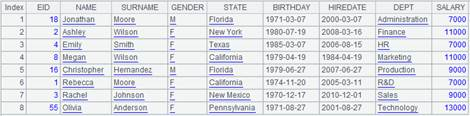

Description:
Compute an expression with each member of a sequence.
Syntax:
|
A.(x,…) |
|
|
A.() |
return A itself |
Note:
The function computes expression x,… over each member in sequence or table sequence A and returns result of the last of expression x. Use "~" to reference the current member in A.
Parameter:
|
A |
A sequence/a record sequence |
|
x |
An expression, which is generally a field name or a legal expression composed of field names and in which "~" is used to reference the current record. |
Option:
|
@m |
Enable parallel processing where the order of task computations is not fixed |
|
@z |
Perform an inverse operation; only apply to non-pure sequences |
Return value:
A sequence
|
|
A |
|
|
1 |
=[1,2,3].(~*~) |
Return [1,4,9]; the tilde ~ means referencing the current member |
|
2 |
=demo.query("select EID,NAME,BIRTHDAY from EMPLOYEE where EID<10") |
Return a table sequence
|
|
3 |
=A2.(EID) |
Return EID column of A2’s sequence
|
|
4 |
=A2.(age(BIRTHDAY)) |
Calculate ages according to BIRTHDAY  |
|
5 |
=A2.() |
Return A2’s sequence  |
|
6 |
=demo.query("select top 10 EID,NAME,GENDER from EMPLOYEE ") |
 |
|
7 |
=A6.(seq(GENDER)) |
Number members having same GENDER value in A6’s sequence  |
|
8 |
=A6.@z(seq(GENDER)) |
Use @z option to perform an inverse operation  |
|
9 |
=[1,2,3].(~=iterate(~~+~),~*10) |
As there are multiple expressions, return result of the last expression, which is [10, 30,60] |